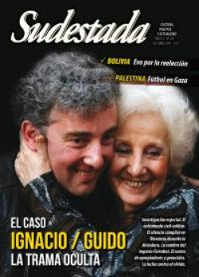

Buscar
El robo del siglo
1972. Ese año, dos combatientes del PRT-ERP se ganan la portada de los diarios por asestar el golpe perfecto: "expropian" 450 millones de pesos de la caja fuerte del BANADE. Cuatro décadas más tarde, un grupo de cineastas recupera esta historia de audacia y convicción en una película imperdible: Seré millones, o la pequeña historia de un gran triunfo revolucionario.
Edición N° 133
Octubre 2014
Revista bimensual
Comprar edición impresaSumario
- De amor y de sangre
- Divino tesoro
- Alejandro
- Bolivia: una goleada en las urnas
- Narcotráfico, etapa superior del imperialismo
- Sweet home, Alabama
- "Cada canción me va marcando el camino"
- La radio ataca
- Mujeres de Kurdistán, poemas de alejandro haddad
- Reggaeton del wallmapu
- Silvio Frondizi
- Jugar en Palestina
- El robo del siglo
- "Me interesa un arte donde el espectador se conmueva"
Compartir Articulo
Dos tipos comunes, sencillos, buenos amigos, empleados correctos y trabajadores del Banco Nacional de Desarrollo (Banade). Dos tipos que militan en el Ejército Revolucionario del Pueblo (ERP), dirigido por Mario Roberto Santucho. Una idea compleja los rodea: expropiar el banco en el que trabajan y utilizar ese dinero para reforzar la lucha revolucionaria.
Esta historia, ocurrida en 1972 y que estalló como una bomba en la prensa de la época, fue retomada por los realizadores Mónica Simoncini, Omar Neri y Fernando Kirchmar, y desembocó en la reciente Seré millones, película que relata ese hecho olvidado con el correr del tiempo y que ahora vuelve a la actualidad con una característica particular: los autores de la expropiación, Oscar Serrano, que también era taxista, y Ángel el Turco Abus son los protagonistas y, a su vez, los encargados de definir quiénes serán los actores que los representarán en la película. Porque Seré millones une la ficción con el rodaje documental -en la cual Simoncini, Neri y Kirchmar tienen una larga experiencia-, permitiendo que los protagonistas reales interactúen y se mezclen con los actores que los representan.
Los diferentes lugares, como el interior del propio Banade o la casa del Turco, en la cual se reúnen, asado de por medio, ex militantes del ERP que participaron en la expropiación, son los escenarios donde la memoria de la historia fluye junto a las preguntas de los propios actores que, desde el desconocimiento, se inundan de información sobre el hecho por el cual el grupo guerrillero obtuvo 450 millones de pesos que luego fueron repartidos a otras organizaciones insurgentes de Sudamérica.
Sudestada dialogó con Simoncini y Neri sobre una película que en su primera semana en cartel fue vista por dos mil personas, algo inusual en una producción de este tipo.
Seré millones nace como una continuación del Informe Banade, realizado por el cineasta y militante del Partido Revolucionario de los Trabajadores (PRT), Raymundo Gleyzer, quien dirigía el grupo Cine de la Base. "El Informe Banade fue recuperado en Italia y un día lo estábamos mirando -recuerda Neri-, y a un amigo le pareció reconocer a uno de los que aparece en la película como el padre de un amigo. Después lo chequeó y sí, era el Turco, así que nos pusimos en contacto con él". A esto se suma la obtención de "un archivo de Córdoba que eran los noticieros digitalizados, que relataban desde el punto de vista del noticiero lo que había sucedido en el banco" y el archivo gráfico de la época, señala Neri.
Pero en ese momento, la idea de la película todavía no estaba en gestación hasta que "empezamos a profundizar la investigación y apareció muchísimo material, incluso la causa judicial. Y después se consiguieron los testimonios de algunos empleados que trabajaban en el banco", agrega Neri. Para Simoncini, "cuando tuvimos todo ese material el desafío era hacer algo diferente de Gaviotas Blindadas", trilogía documental que cuenta la historia del PRT-ERP. "Queríamos llegar a más público, entonces ahí empezamos a buscarle la vuelta para encontrar una manera nueva de contarlo. Como había bastante material de archivo y la investigación estaba muy avanzada, empezamos a idear meter a otra generación dentro de la película para que pudieran identificarse y tocar el tema mostrando cómo es el proceso de un pibe joven acercándose a un viejo, que parece un jubilado que va a hacer las compras, pero que en realidad tiene una experiencia de acción y toda una ética en su forma de vida", afirma Simoncini.
(La nota completa en Sudestada N° 133 - octubre de 2014)
Comentarios
Leandro Albani
Articulos más vistos


LIBRERÍA SUDESTADA

Colección infantil

Distribuidora de Libros

Suscripción

Sudestada en URUGUAY

Otros articulos de esta edición
 Poesía blindada
Poesía blindada
Mujeres de Kurdistán, poemas de alejandro haddad
Las mujeres-poesías, todas ellas juntas en un libro. Y ese libro, confeccionado palabra por palabra por el escritor y documentalista ...
 Marxistas contemporáneos
Marxistas contemporáneos
Silvio Frondizi
No fueron sólo pensadores, sino peregrinos de un camino posible y deseable hacia la revolución. En su recorrido se fueron ...
 La trama oculta sobre Ignacio / Guido
La trama oculta sobre Ignacio / Guido
De amor y de sangre
Detrás de la felicidad por la aparición del nieto de Estela de Carlotto, una densa trama recién comienza a develarse: ...
 Adelanto Ciudad blanca, crónica negra
Adelanto Ciudad blanca, crónica negra
Narcotráfico, etapa superior del imperialismo
Ciudad blanca, crónica negra es el nombre del nuevo libro de Carlos Del Frade. En un profuso trabajo de investigación, ...
 Jorge Villegas, dramaturgo
Jorge Villegas, dramaturgo
"Me interesa un arte donde el espectador se conmueva"
"Agustín Tosco es el hombre más importante de toda la historia de Córdoba", afirma el dramaturgo Jorge Villegas. Desde ese ...
Sweet home, Alabama
Septiembre de 1963. Una bomba del Klu Klux Klan estalla en una iglesia y mata a cuatro nenas. La comunidad ...